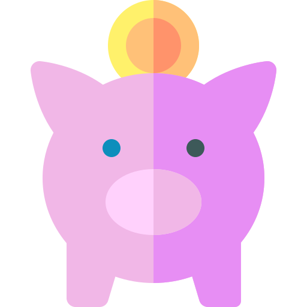

<div class="sidenav_container" [@onSideNavChange]="sideNavState ? 'open' : 'close'">
  <div fxLayout="column" fxLayoutGap="10px" style="height: 100%">
    <div class="user_menu">
      <div class="brand">
        
      </div>
    </div>

    <div>
      <mat-nav-list>
        <a [routerLinkActive]="['active']" [routerLink]="page.link" mat-list-item *ngFor="let page of pages">
          <mat-icon style="padding-right: 5px">{{ page?.icon }}</mat-icon>
          <span class="labels" [@animateText]="linkText ? 'show' : 'hide'">{{ page?.name }}
          </span>
        </a>
      </mat-nav-list>
    </div>

    <div class="bottom-trigger" fxLayout="row" fxLayoutAlign="end center" style="padding: 0px 10px">
      <button mat-icon-button (click)="onSinenavToggle()" color="primary">
        <mat-icon *ngIf="sideNavState">first_page</mat-icon>
        <mat-icon *ngIf="!sideNavState">last_page</mat-icon>
      </button>
    </div>
  </div>
</div>
